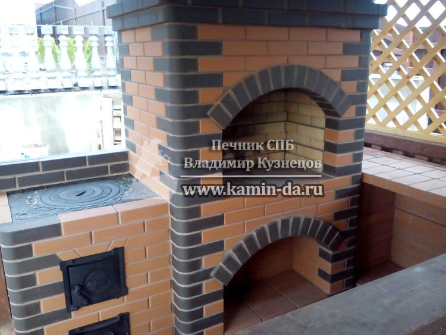
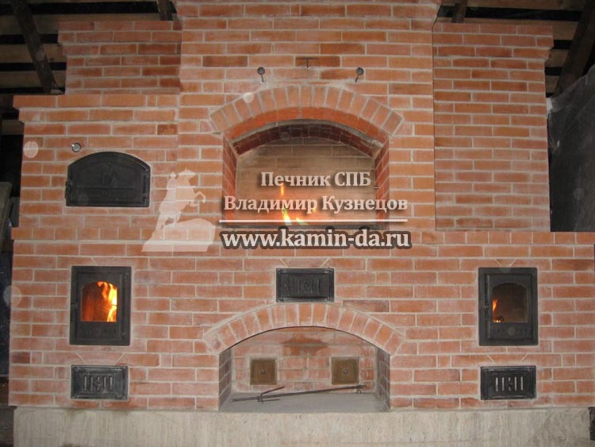

Сколько в Санкт Петербурге стоят услуги по кладке уличной печи барбекю из кирпича?

Дорогие друзья, ко мне очень часто обращаются заказчики с просьбой выполнить кладку уличной печи из кирпича, так называемой печи барбекю. Конечно же, за последнее время объём таких заказов в нашей, ленинградской области, значительно вырос. В этой статье я попробую описать все преимущества типовых решений на примере своих собственных работ.
В последнее время спрос на услуги по кладке печей барбекю в Санкт-Петербурге и области вырос в несколько раз. Но несмотря на большой спрос, и увеличившееся предложение новых строителей, многие заказчики, которые мне звонят, все равно четко не представляют, что такое уличная печь барбекю из кирпича, для чего она нужна, какие секции может включать и насколько функциональна и необходима каждая секция такой печи барбекю.
Итак, в данной статье я попробую осветить наиболее распространенные типовые варианты, опишу для чего строятся эти секции и как правильно должны работать. Я считаю, что в нашем деле услуга печника в СПБ должна быть максимально прозрачна в отношении печей барбекю из кирпича.
Печь барбекю из кирпича в СПБ
Я выделю 6 основных зон, которые наиболее функциональны и востребованы. К первым 4 относятся самые значимые: печь барбекю , печка под казан, столешница и мойка. Этих 4 секций достаточно более чем 90% моих заказчиков. Конечно что же основной любой уличной печи является непосредственно печь барбекю.
Начну я описание зон барбекю с классического варианта - Казан + барбекю печь. На следующей фотографии именно такая работа, где совмещены всего лишь две секции, уличная печь и печка под казан, но с этим функционалом заказчик никогда не будет нуждаться в каких-то дополнительных секциях. Итак, рассмотрим мою работу, уличную печь барбекю из кирпича № 5.
Данную работу я построил несколько лет назад, и на фото - ваш покорный слуга собственной персоной. Я бы хотел затронуть один очень важный момент. Печь барбекю из кирпича - это не просто дань какой-то моде. В первую очередь - это функциональная конструкция. И дело даже не в том, что она долго служит. В принципе, гораздо дешевле купить железный/чугунный мангал и жарить там шашлык.
Какое же основное преимущество даёт печь уличная барбекю печь из кирпича? В моих барбекю из кирпича главное - это дымоотведение. Обратите внимание на мою работу - почти все уличные печи строятся в открытой беседке, где есть крыша, установленная на столбах.
Либо же строительство такой барбекю из кирпича ведется в полностью закрытом помещении. Строится такая печь в закрытых беседках для того, чтобы ни один вид непогоды не стал бы преградой для вашего отдыха. Будучи установленной под навесом, и даже закрытой стенами, моя уличная печь сможет приготовить шашлык в проливной дождь, снег, град и в лютый мороз.
Ещё одно фото моей работы, где наглядно виден дымоход, через который будут удаляться все дымовые газы. Барбекю печь из кирпича, Работа № 5.
В правильно сложенной печи барбекю никогда не будет идти дым из барбекю. Главная ответственность печника в этом вопросе - создать такую тягу, чтобы в помещении не было ни малейшего задымления. Это под силу только мастеру, который многие годы провел занимаясь строительством и кладкой кирпичных печей. Именно отсюда можно получить опыт вкладки уличных печей барбекю.
Однако многие современные строители уличных печей пренебрегают данными навыками, и делают больший упор на кирпичной кладке. Зачастую даже не представляя, что такое каминный зуб, и от чего зависит тяга в барбекю из кирпича. По сути, этот вид работ является прототипом изготовления и кладки каминов из кирпича.
Подведя небольшой итог хочу настоятельно порекомендовать заказчику проверять работу следующим образом : любая печь барбекю должна работать одновременно с другими секциями - казаном, мини-русской печью, духовкой и коптильней. Если в вашей уличной печи больше чем одна зона, то все зоны должны гореть одновременно. А главное - абсолютно все отходы горения должны устраняться в дымоход.
Более того, при ненадлежащем исполнении данного требования вы смело можете урезать жалование вашего строителя как минимум вдвое, а то и во все - заставить полностью переделывать работу и компенсировать понесенные расходы на материал!
Цены на уличные барбекю
Цена ну барбекю из кирпича в Санкт-Петербурге не всегда может быть представлена однозначно. Подтверждении всего вышесказанного я не могу не привести более сложные задачи. Как правило стандартная типовая комплектация в составе печи барбекю и казана часто дополняется так называемой уличной мини-русской печью. Эта печь имеет эффект русской печи, но без лежанки. То есть вы можете приготовить абсолютно любое блюдо на раскаленных углях в глиняной посуде.
Выглядит такая секция в уличных барбекю печах, как следующем фото № 16. Обратите внимание, Мини-русская печь находится в левой части всего комплекса. А очень эффектная особенность этого объекта ещё и в том, что казан скрыт под кирпичным навесом. Даже в случае , если бы такой комплекс находился у вас на открытом воздухе, дождь не помешал бы приготовить вкусный плов!
Конечно же, в одной статье мне не удастся раскрыть все темы уличных печей барбекю в СПБ, следите за новыми статьями на сайте, я постоянно буду стараться развивать свои идеи о кладке уличных барбекю печей из кирпича, и доносится все тонкости выбора барбекю для дачи до наших заказчиков.
С Вами всегда на связи, Печник в Санкт-Петербурге, Владимир Кузнецов